Set the member parameters in a panel docked beside AutoCAD. JI-DETAILER details the member, checks it against the code, and writes the finished sheet onto its own layer standard — sections, bar callouts, splice zones, dimensions and the schedules that go with them.
Windows 10/11 64-bit · AutoCAD 2018 or later · installs per-user, no admin rights needed.
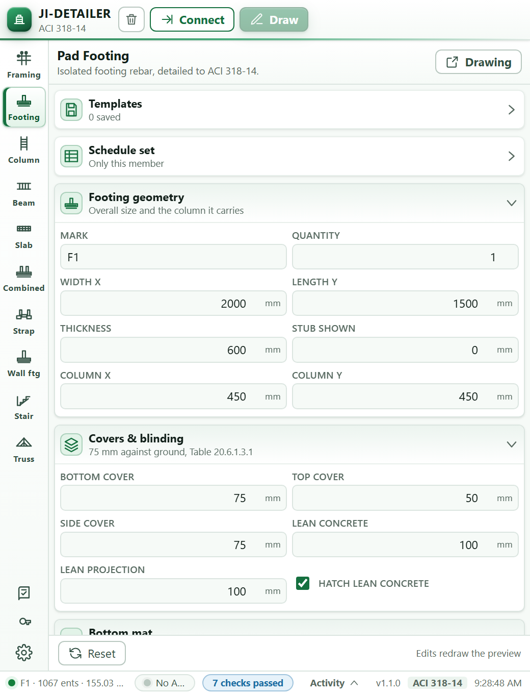
Every member type produces a complete sheet, not a sketch: plans, sections, dimensioned bar callouts, levels, and the notes a fabricator actually needs. Everything below is real JI-DETAILER output.
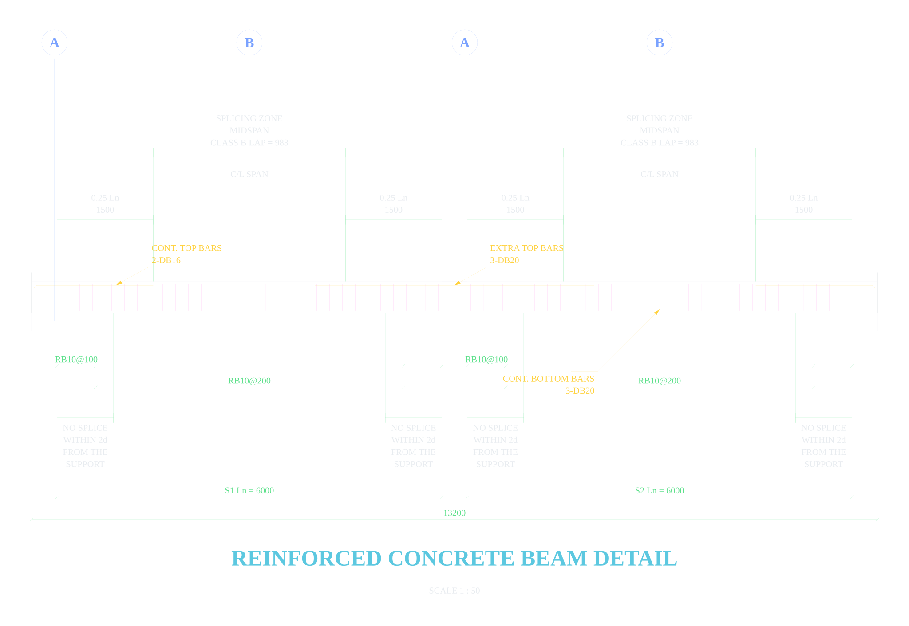
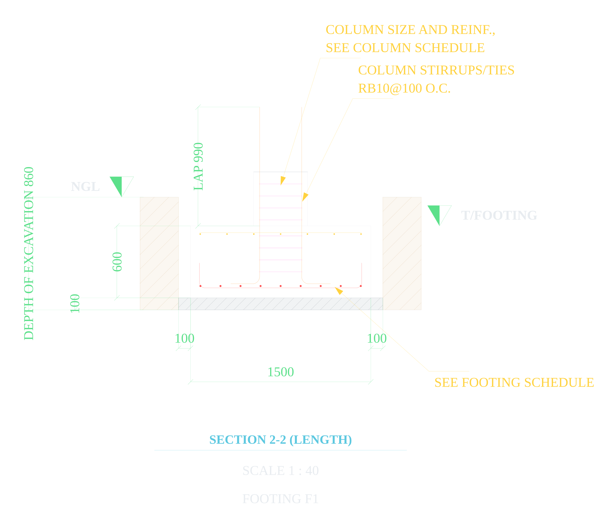
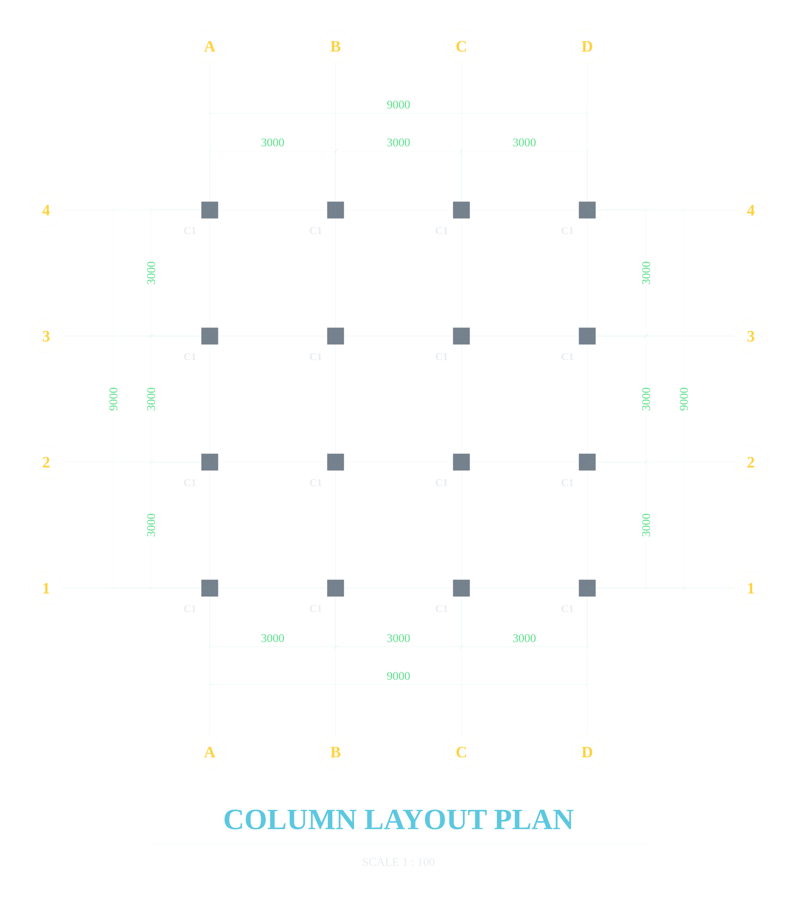
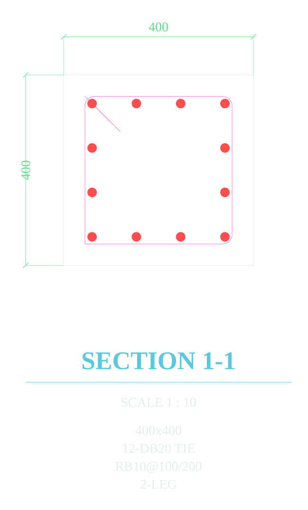
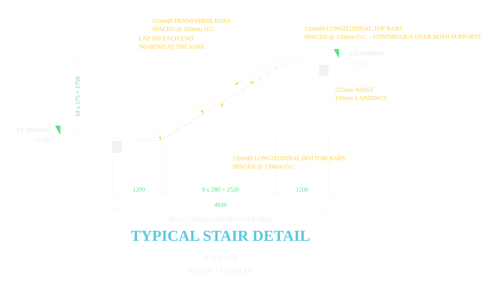
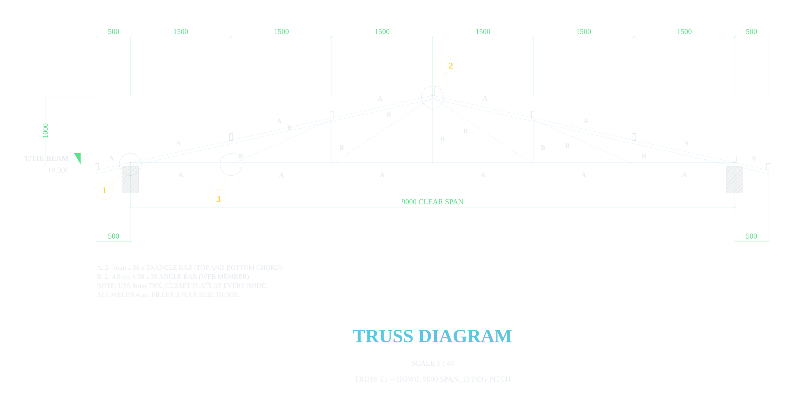
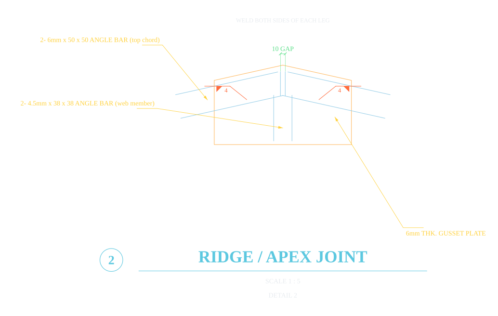
Not a second tool, and not a spreadsheet to reconcile. The bending schedule, the hook table and the lap-splice table are generated from the same detail, so they cannot disagree with the drawing beside them.
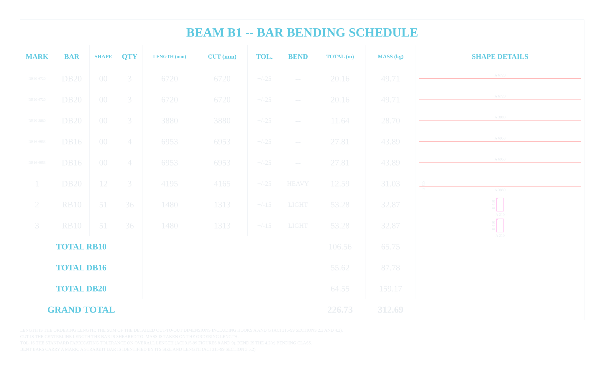
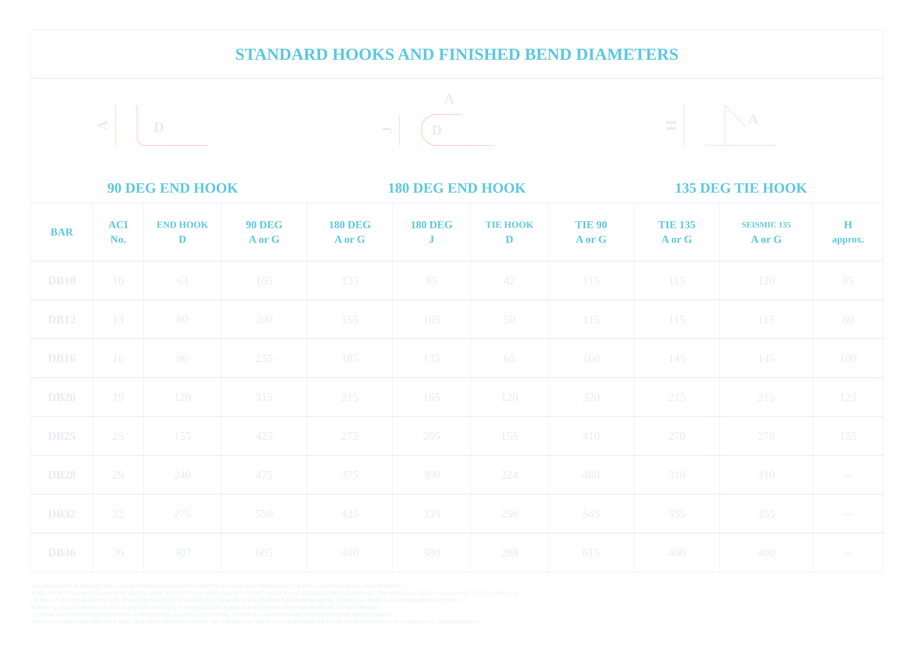
The panel is 300 px wide on purpose: it docks against the edge of your screen and stays on top, so AutoCAD keeps the room it needs. The drawing opens as its own OS window — park it on a second monitor and leave it there. JI-DETAILER drives the AutoCAD session already open on your desk, so there is no export, no import, and no file passed between them.
Every release carries a SHA256SUMS file. To confirm the
installer you downloaded is the one that was published:
Get-FileHash .\JI-DETAILER-Setup-1.1.0.exe -Algorithm SHA256Offline, single-PC licences. A licence is a small signed file bound to one PC identifier — there is no licence server, and the app never phones home.
Upgrading is the same installer over the top. Your licence lives under
%LOCALAPPDATA%\JI-DETAILER and is left alone, so an upgrade
never asks you to re-license the same PC.
A floating dock for Windows that launches your programs with one click. It starts empty and you fill it by dragging icons onto it, so it holds exactly what you put there — the JRB-iStruct tools, AutoCAD, STAAD, a project folder, whatever you open every morning.
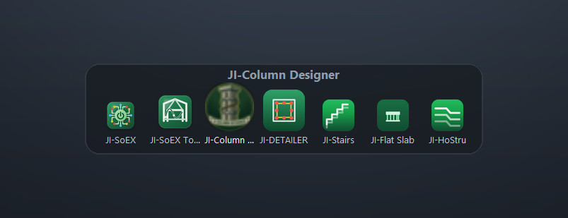
.exe files, Start-menu items, folders and documents all work. A shortcut is resolved to the real program, with the real icon.%LOCALAPPDATA%\JI-DOCKS and the installer leaves them alone.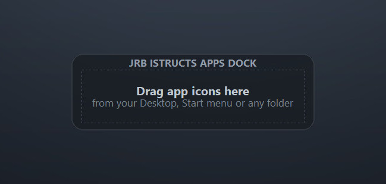
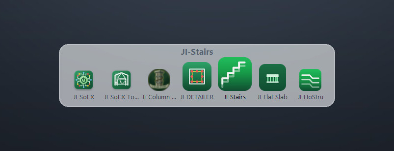
Windows 10 or 11, 64-bit · installs per-user, no administrator rights · about 17 MB · released under the MIT licence, so you may pass it on.